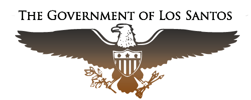
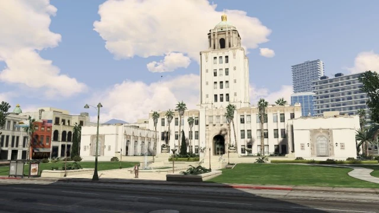

Stát San Andreas je suverénní federální stát na západním pobřeží Spojených států. Hlavním městem je Los Santos, největším okresem Blaine County.
Stát San Andreas byl založen v roce 1850 a dnes je domovem přes 8 milionů obyvatel. Skládá se ze tří hlavních oblastí:
• Los Santos • Blaine County • Vinewood Hills a okolní ostrovy